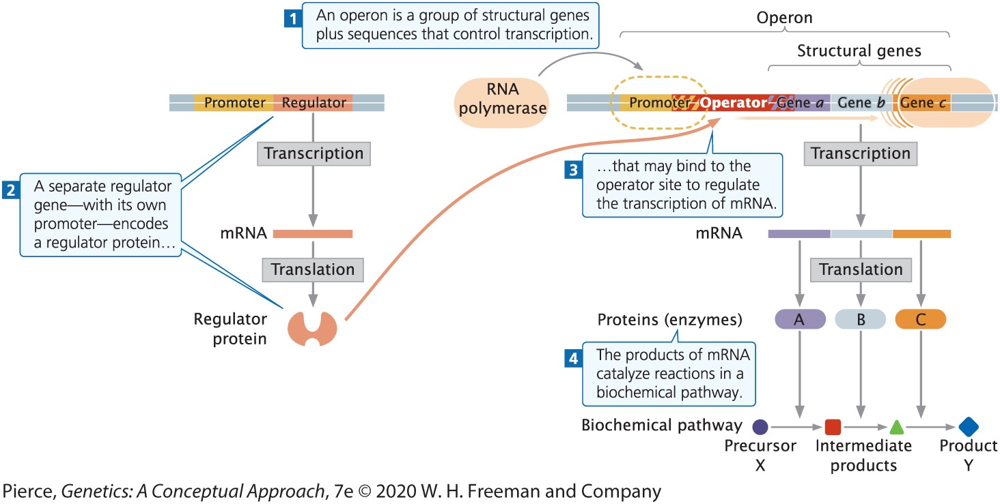
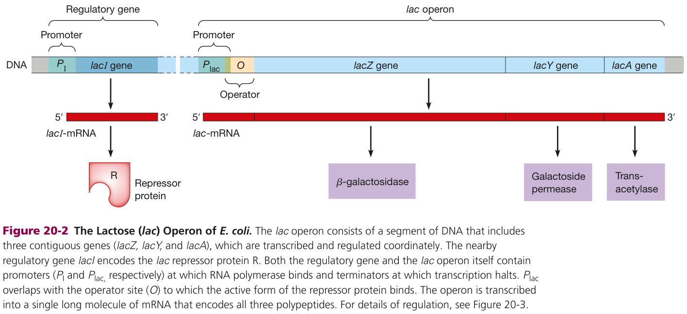

結構基因與調節基因的定義
從乳糖操縱組看結構基因與調節基因各自的功能，逐版對照臺灣高中教材與原文書譯本。
在同一套基因調控系統中，結構基因的產物執行該系統的細胞功能，調節基因的產物則改變目標基因的表現。兩者依產物在該系統扮演的角色區分。
一、兩個詞各自怎麼定義？
| 名稱 | 高中操縱組的用法 | 原文書的用法 |
|---|---|---|
| 結構基因（structural gene） | 編碼執行該操縱組功能所需蛋白質的基因，例如代謝酵素或膜上的運輸蛋白。通常與同組的其他結構基因一起轉錄。 | Pierce 7e 明列其編碼的蛋白質可用於代謝、生物合成或細胞結構。這個詞也用於真核案例，例如 Klug 的酵母菌半乳糖系統。 |
| 調節基因（regulatory gene；regulator gene） | 編碼能改變目標基因轉錄的調節蛋白，例如 lacI 編碼抑制蛋白。 | Pierce 7e 把調節基因的產物寫成 RNA 或蛋白質。蛋白質可促進或抑制轉錄，有些調節 RNA 會讓目標 mRNA 更容易降解，或減少它的轉譯。 |
調節蛋白與調節基因各有分工。 調節基因是 DNA 上的基因。調節蛋白是基因表現後產生、實際參與調控的蛋白質。以乳糖操縱組而言，操作子是 DNA 上供抑制蛋白結合的調節序列，屬於另一類元件。可延伸閱讀 操作子會不會轉錄與轉譯產生蛋白質？。
二、拿乳糖操縱組對照
| 名稱 | 類別 | 產物或身分 | 在乳糖調控中的角色 |
|---|---|---|---|
| lacZ | 結構基因 | β 半乳糖苷酶 | 催化乳糖分解。 |
| lacY | 結構基因 | 乳糖通透酶 | 協助乳糖進入細胞。 |
| lacA | 結構基因 | 轉乙醯酶 | 可對某些半乳糖苷進行乙醯化。 |
| lacI | 調節基因 | 乳糖抑制蛋白 | 其產物可結合操作子、抑制轉錄。lacI 有自己的啟動子，位於乳糖操縱組之外。 |
| lacO | 調節序列 | 操作子 | 是抑制蛋白結合的 DNA 序列。 |
「位於操縱組之外」是 lacI 的排列情形。解題時先確認基因的產物及其作用，再判斷基因與操縱組的位置。調節蛋白可影響轉錄，同一組的結構基因則會一起被轉錄。114 年臺中女中教師甄試第 3 題以「構造基因」指 z，可從題目的 i、o、z 確認用詞所指。
用兩張原書圖對照

左側調節基因產生調節蛋白。右側的 a、b、c 是結構基因，三者共同轉錄，各自編碼圖中的酵素 A、B、C。
An operon is a single transcription unit that includes a series of structural genes, a promoter, and an operator.

lacI 編碼抑制蛋白。乳糖操縱組內的 lacZ、lacY、lacA 一起轉錄，產生與乳糖利用有關的蛋白質。
The nearby regulatory gene lacI encodes the lac repressor protein R.
三、遇到不同書使用同一個詞
- 「結構基因」涵蓋多廣，要看書中的對照對象。 Sadava 強調它指定蛋白質的胺基酸序列，Prescott、Raven 植物學可用它泛稱蛋白質編碼基因；Wilson & Walker 在基因區段模型裡則用它指會被轉錄成 RNA 的區段。若題目正在對照結構基因與調節基因，採用產物的功能區分較清楚；若題目在區分轉錄區與調節區，依該書的區段用法理解。
-
術語表保留了這個詞。 本機《生命科學名詞》將
regulatory gene對應為「調節基因」，將structural gene收作「結構基因」，並標註「舊名」。部分原文書的譯本使用「調控基因」，仍可從括註的英文詞辨識。 -
真核生物也有兩詞並用的案例。 Klug 以酵母菌 GAL 系統說明，部分基因的蛋白質負責運輸或利用半乳糖，另一組基因的產物控制前一組的轉錄。這個例子也顯示，兩詞可以用來描述操縱組以外的系統。
- 廣義的調節基因包含調節 RNA。 Pierce 明列調節基因的產物可以是 RNA 或蛋白質。Campbell 的微 RNA 例子說明，有些調節 RNA 會和目標 mRNA 配對，使它降解或降低轉譯。判讀涉及 RNA 的題目時應看題目採用的定義範圍。
- Hickman 19e 的用語特別。 該書在動物真核轉錄控制一節，把和被轉錄區相連的啟動子區稱作 regulatory gene，並把會被轉錄成 mRNA 或 rRNA 的 DNA 稱作 structural gene。這裡討論的是啟動子位置如何影響相連基因的表現。依 Pierce 與高中乳糖操縱組的用語，這種啟動子屬於調節序列，regulatory gene 則指產生調節蛋白或 RNA 的基因。
教學提示
拿 lacZ 和 lacI 讓學生各說出「基因 → 產物 → 產物做什麼」。只背「結構基因製造酵素」會漏掉 lacY 的運輸功能。只背「調節基因製造抑制蛋白」會漏掉活化蛋白，也會漏掉大學教材納入的調節 RNA。
高中七版逐版對照
以可取得的課文或教師用書核對。表中列印刷頁，並標示使用的資料版本。
| 版本 | 章節／頁碼 | 結構基因 | 調節基因 |
|---|---|---|---|
| 三民 | § 4-2，p.153 | 稱 lacZ、lacY、lacA 為三個結構基因，產物與乳糖代謝有關。 | 位於乳糖操縱組外，產物為抑制蛋白。 |
| 全華 | § 5-2-1、§ 5-2-2，p.144 | 功能相關、相鄰的基因共用啟動子。乳糖操縱組的三個結構基因各有乳糖代謝相關產物。 | 操縱組外的調節基因表現出抑制蛋白，由它控制結構基因的表現。 |
| 南一 | § 2-3.2，p.124–125 | 正文與圖 2-21 說明乳糖吸收與代謝的三個相鄰基因。本節未見「結構基因」這個名稱。 | 正文與圖 2-21 明列調節基因，其產物為抑制蛋白。 |
| 康熹（舊課綱） | § 11-3.2，p.94 | 在乳糖操縱組的例子裡，稱編碼乳糖代謝相關酵素的基因為結構基因。 | 稱編碼抑制蛋白的基因為調節基因。抑制蛋白能結合操作子。 |
| 泰宇 | § 3-4.2，p.163–165 | 三個相連結構基因共用啟動子，一起被轉錄，各自有起始與終止密碼子並轉譯出各自的蛋白質。 | 稱編碼該抑制蛋白的基因為調節基因，另指出它有自己的啟動子。 |
| 龍騰 | § 4-3，p.163 | 乳糖操縱組內有多個編碼乳糖代謝相關酵素的結構基因。 | 操縱組外有產物為抑制蛋白的調節基因。 |
| 翰林（較早的 108 課綱版與 114 年教師手冊附課文） | 較早版課本 p.145–146／手冊 p.285–286；114 年課本 p.151–152／手冊 p.309–310 | 較早版先給一般定義，產物通常構成細胞結構或作為生理、生化反應所需的酵素。114 年版從乳糖代謝切入，說明有三個相鄰基因。 | 較早版說調節蛋白開啟或關閉結構基因表現。114 年版將功能放在乳糖調控脈絡中說明，圖 4-13 分列兩類基因。 |
原文書的定義與用法
Pierce 遺傳學 7e，第 16 章
結構基因編碼代謝、生物合成或細胞結構所用的蛋白質。調節基因的產物可為 RNA 或蛋白質。
Sadava 生命科學 12e，第 16 章（結構基因）
以指定蛋白質胺基酸序列來定義結構基因，舉酵素與細胞骨架蛋白。
Campbell 生物學 13e，第 18 章（乳糖操縱組）
將 lacI 稱為調節基因，編碼能結合操作子的抑制蛋白，並位在乳糖操縱組之外。
Klug 遺傳學，第 17 章
酵母菌 GAL 系統中，兩組基因分別負責利用半乳糖所需的功能，以及對這些基因施加正、負轉錄調控。
Hickman 動物學 19e，第 5 章
在真核順式調控段落，以「結構基因」指轉錄成 mRNA 或 rRNA 的 DNA，以「調控基因」指相連的啟動子區。
逐部譯本檢索
將本機「原文書翻譯」各學科資料夾內 6,726 個 Markdown 與純文字檔納入檢索，比對「結構基因、構造基因、調節基因、調控基因」及英文 structural gene(s)、regulatory gene(s)、regulator gene(s)。排除備份、重複段落、單純意指「調節基因表現」的動詞用法後，逐一回讀相關段落。下表收錄 39 部／版譯本的 69 筆來源，包括明文定義、例示及相關用法。
查看各書的說法與章節
| 書名與章次 | 出現方式 | 該書的說法 |
|---|---|---|
| Alberts_ECB6，第 8 章 | 語境用法 | 乳糖操縱組編碼攝入與分解乳糖的蛋白質，轉錄受抑制與活化蛋白控制；正文以角色說明。 |
| Alberts_ECB6，第 10 章 | 例示 | 稱果蠅胚胎呈條帶式表現的基因為調節基因；著重觀察，未提供雙詞正式定義。 |
| Bear4e，第 17 章 | 明文定義或區辨 | 以括註把調節基因定為調節其他基因表現的基因；fru 是行為例子。 |
| Becker 10e，第 20 章 | 明文定義或區辨 | 乳糖利用涉及兩類基因：乳糖攝取與代謝蛋白的編碼基因，以及產物控制第一類基因的調節基因。 |
| Becker 10e，第 20 章 | 例示 | 酵母 SIR 基因是調節基因例，其蛋白質可抑制其他基因表現。 |
| Bergstrom_Evolution，第 13 章 | 例示 | Hox、snail、Dlx 作為調節神經脊發育的基因例。 |
| Brock 15e，第 6 章 | 例示 | 色胺酸操縱組五個產生生合成工具蛋白的基因稱結構基因。 |
| Brooker 4e，第 12 章 | 例示 | 乳糖操縱組正文稱 lacI 編碼抑制蛋白且有自己的啟動子；以功能例示。 |
| Brooker 4e，第 20 章 | 例示 | 動物 Hox 基因編碼轉錄因子，也會經其他調節基因影響更下游基因的表現。 |
| Brooker_Genetics 8e，第 12 章 | 例示 | 調節基因編碼反式作用轉錄因子，作用靶點可以距離遙遠甚至位於另一條染色體。 |
| Brooker_Genetics 8e，第 14 章 | 例示 | 譯編說明以色胺酸操縱組的蛋白質編碼區為結構基因；正文著重弱化控制，未另立詞條。 |
| Campbell 12e，第 18 章 | 例示 | 色胺酸操縱組的調節基因 trpR 編碼抑制蛋白，本身另有啟動子。 |
| Campbell 12e，第 18 章 | 例示 | lacI 位於乳糖操縱組外，編碼可結合操作子的抑制蛋白；lacZ 等編碼乳糖利用蛋白質。 |
| Campbell 12e，第 18 章 | 例示 | 真核細胞的主調節基因 MyoD 編碼蛋白質，促進肌肉細胞分化的表現程序。 |
| Campbell 13e，第 18 章 | 例示 | 色胺酸操縱組的調節基因 trpR 編碼抑制蛋白，本身另有啟動子。 |
| Campbell 13e，第 18 章 | 例示 | lacI 位於乳糖操縱組外，編碼可結合操作子的抑制蛋白；lacZ 等編碼乳糖利用蛋白質。 |
| Campbell 13e，第 18 章 | 例示 | 微 RNA 基因可藉由發揮功能的微 RNA 產物影響目標傳訊 RNA；這是廣義調節功能的例證。 |
| Campbell 13e，第 18 章 | 例示 | 真核細胞的主調節基因 myoD 編碼蛋白質，促進肌肉細胞分化的表現程序。 |
| Cox 2e，第 19 章 | 例示 | 以 p53 參與細胞凋亡的調節基因為例。 |
| Cox 2e，第 22 章 | 例示 | 發育調節基因依序引導細胞走向不同組織命運。 |
| Evolution 4e，第 15 章 | 例示 | Hox 基因參與由相互作用的調節基因及其受調節基因構成的網路。 |
| Evolution 4e，第 15 章 | 語境用法 | 將傳訊蛋白質、轉錄因子、順式調節元件與結構基因列為發育路徑成員。 |
| Evolution 5e，第 7 章 | 例示 | 以編碼轉錄因子的基因為調節基因的一類，討論體色的形成。 |
| Evolution 5e，第 11 章 | 例示 | 同新版以 Hox 參與調節基因與目標基因的網路為例。 |
| Freeman 8e，第 18 章 | 語境用法 | 以乳糖操縱組的抑制蛋白基因 lacI 區分於受其控制的 lacZ、lacY、lacA。 |
| Freeman 8e，第 21 章 | 例示 | 動物發育有調節基因依序開啟其他調節基因的級聯；列具體功能。 |
| Gilbert 13e，第 10 章 | 例示 | 果蠅的間隙基因為發育調節基因，基因本身的表現也受強化子控制。 |
| Gilbert 13e，第 26 章 | 例示 | 稱編碼蛋白質、其突變可能帶來表型變異的基因為結構基因；另以改變發育調節基因解釋表型差異。 |
| Goldberg_Genetics7e，第 18 章 | 例示 | lacZ、lacY、lacA 明稱結構基因，編碼乳糖利用所需蛋白；啟動子和操作子為調控元件。 |
| Goldberg_Genetics7e，第 18 章 | 例示 | 將調節基因和調節 DNA 序列分列；可影響各基因的表現。 |
| GuytonHall15e，第 3 章 | 明文定義或區辨 | 調節基因促成調節蛋白的形成，該蛋白可活化或抑制轉錄。 |
| Hickman 19e，第 5 章 | 不同用法 | 該書順式調控段落將轉錄成 RNA 的區段稱結構基因（包括 rRNA 例），把相連的啟動子區域稱調節基因。這是該段特殊用法。 |
| Hill 4e，第 14 章 | 例示 | PAX6 和其他調節基因互動，是眼睛發育的調節例。 |
| Hopkins_PlantPhysiology，第 11 章 | 例示 | 固氮基因群並列編碼酵素的結構基因與調節基因。 |
| Hopkins_PlantPhysiology，第 24 章 | 例示 | 以植物特定時間表現的調節基因產生可開啟開花基因的蛋白質為例。 |
| Janeway 10e，第 13 章 | 例示 | 在病毒學分類語境，用調節基因指編碼調節蛋白的一組基因。 |
| Kandel 6e，第 2 章 | 例示 | 同一調節基因可在不同物種的行為中具有不同功能。 |
| KavanaghFungi2e，第 2 章 | 例示 | 真菌交配調節基因可能控制交配費洛蒙表現，也涉及其他交配相關過程。 |
| Klug_Genetics，第 16 章 | 明文定義或區辨 | 明文稱編碼酵素一級結構的基因為結構基因，隨即列乳糖操縱組的三個例子。 |
| Klug_Genetics，第 16 章 | 例示 | 乳糖操縱組的結構基因分別產生乳糖利用蛋白；lacI 的抑制蛋白調節結構基因的轉錄。 |
| Klug_Genetics，第 17 章 | 例示 | 酵母 GAL 系統有 4 個半乳糖利用的結構基因與 3 個調節基因；兩詞也見於真核生物。 |
| Lehninger8e，第 28 章 | 例示 | 在色胺酸操縱組中稱前導區後的受控蛋白質編碼基因為結構基因。 |
| Lehninger8e，第 28 章 | 例示 | 稱多個主導胚胎發育命運的基因為調節基因，其蛋白質或 RNA 產物共同作用。 |
| Lodish 9e，第 5 章 | 例示 | 病毒學語境的結構基因所編碼的是維持病毒顆粒構造的蛋白質，屬該處用法。 |
| Lodish 9e，第 25 章 | 例示 | 癌症章以生長調節基因說明調節區改變可影響其表現。 |
| Pierce 7e，第 16 章 | 明文定義或區辨 | 兩詞定義。結構基因編碼供代謝、生合成或細胞結構使用的蛋白質；調節基因產物可為 RNA 或蛋白質，影響其他基因的轉錄或轉譯。 |
| Pierce 7e，第 16 章 | 明文定義或區辨 | 操縱組專義。調節基因產生可結合操作子的調節蛋白以增減轉錄，通常獨立表現。 |
| Prescott 12e，第 13 章 | 明文定義或區辨 | 細菌基因體的蛋白質編碼基因統稱結構基因，屬該章廣義用法。 |
| Prescott 12e，第 14 章 | 例示 | 乳糖操縱組的三個結構基因受 LacI 抑制蛋白控制，lacI 位於該操縱組上游。 |
| Raven 13e，第 16 章 | 語境用法 | 以 lacI 和編碼乳糖利用蛋白的一組基因說明角色；圖後的譯編說明才稱三者為結構基因。 |
| Raven 13e，第 53 章 | 例示 | 果蠅 fru 被稱為調節基因，可開啟影響求偶神經迴路的其他基因。 |
| RavenPlants8e，第 9 章 | 明文定義或區辨 | 真核蛋白質編碼序列稱結構基因，常由內含子隔開，屬該章廣義用法。 |
| RavenPlants8e，第 9 章 | 例示 | 比較細菌結構基因可共同轉錄成同一條 RNA，真核結構基因通常分開轉錄。 |
| Sadava 12e，第 16 章 | 明文定義或區辨 | 結構基因指定蛋白質胺基酸序列，例為酵素或細胞骨架蛋白。 |
| Sadava 12e，第 16 章 | 例示 | 以調節基因的蛋白質產物結合 DNA 調節序列區分兩者，典型操縱組包含結構基因。 |
| Sadava 12e，第 16 章 | 例示 | 以色胺酸操縱組的調節基因 trpR 和結構基因說明兩類功能。 |
| SherwoodAnimalPhysiology，第 9 章 | 例示 | Tbx-5 是調節基因，編碼影響心臟發育圖式的轉錄因子。 |
| Simpson_PlantSystematics，第 2 章 | 例示 | 發育時序與分類脈絡，調節基因變異可能導致形態差異。 |
| Solomon 11e，第 14 章 | 明文定義或區辨 | 乳糖操縱組的酵素編碼序列各稱結構基因，三個基因的蛋白質參與不同環節。 |
| Starr14e，第 10 章 | 語境用法 | 以三個乳糖操縱組基因各自編碼蛋白質來說明；這段沒有用結構基因為正式名稱。 |
| Starr14e，第 43 章 | 例示 | 以魚類階序改變時首先提高某調節基因的表現，帶動其他基因的變化為例。 |
| Stryer10e，第 31 章 | 明文定義或區辨 | 操縱組模型分列結構基因、調節基因及操作子；調節基因編碼調節蛋白。 |
| Stryer10e，第 31 章 | 明文定義或區辨 | 細菌調節基因可產生與控制位點互動、促進或抑制轉錄的蛋白質。 |
| Taiz 7e，第 21 章 | 例示 | 植物發育例示，桃核與阿拉伯芥果皮木質化時會誘導表現部分相似的調節基因。 |
| Tortora 13e，第 8 章 | 明文定義或區辨 | 結構基因決定蛋白質構造；乳糖利用的結構基因與 DNA 控制區有別。 |
| Tortora 13e，第 8 章 | 例示 | I 調節基因編碼抑制蛋白；蛋白質與操作子結合而抑制轉錄。 |
| Weaver 5e，第 7 章 | 例示 | 稱乳糖利用蛋白質的編碼基因為結構基因，列乳糖系統為例。 |
| Weaver 5e，第 7 章 | 例示 | 調節基因 lacI 產生抑制蛋白；其產物與操作子結合。 |
| WilsonWalker 8e，第 4 章 | 不同用法 | 在基因三區段的模型，把會被轉錄成 RNA 的中央區段稱結構基因，和上下游調控區分列。 |